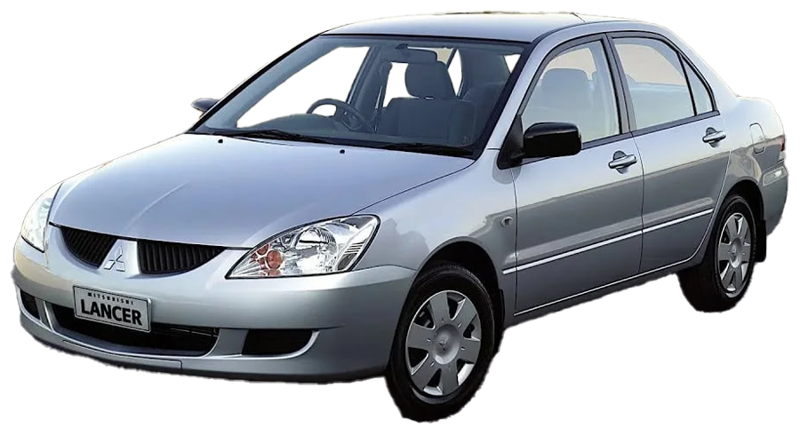

Самые популярные модели
-
Mitsubishi Lancer Evolution VIII

Данный экземпляр является моделью машины из игры Need For Speed Most Wanted. Также его можно назвать "Серебристый демон Рокпорта". Этот Mitsubishi Lancer Evolution VIII – не просто машина, а настоящий символ улиц Рокпорта. Evo не блещет яркими аэрографиями или неоновыми подсветками, но в этом и есть его сила: минимализм, точность и мощь.
-
Mitsubishi Lancer Evolution IX
"Когда турбина завывает, а сердце бьётся в такт с оборотами – это не просто машина. Это Evo IX." Узнаваемая «акулья пасть» решётки радиатора, широкие арки колёс и массивный спойлер, который не просто для красоты – он держит заднюю ось на бешеных скоростях. "Если R34 GT-R – это король, то Evo IX – его безумный самурай."
-
Mitsubishi Lancer Evolution X

"Когда турбина раскручивается до предела, а полный привод вцепляется в асфальт – ты понимаешь: это не просто машина. Это – лебединая песня легенды." "Evo X – это не просто машина. Это последний самурай, который вышел на дорогу, зная, что ему нет замены. Он быстрый, технологичный и безумно красивый. Но главное – он последний."